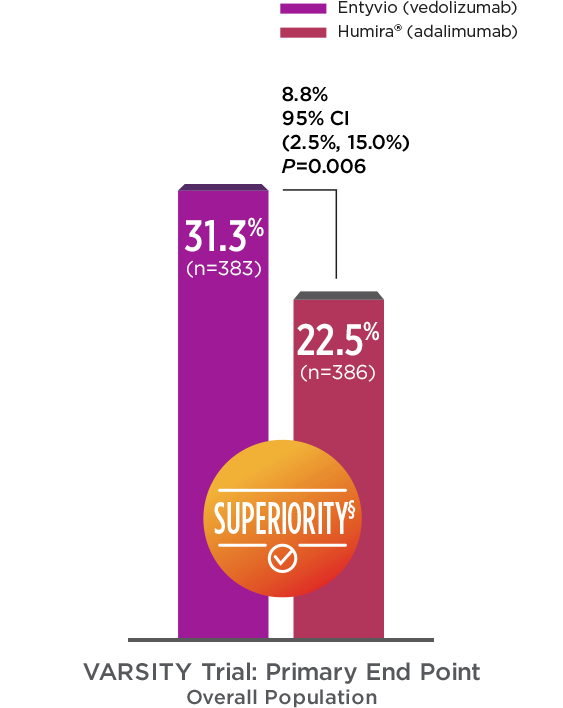
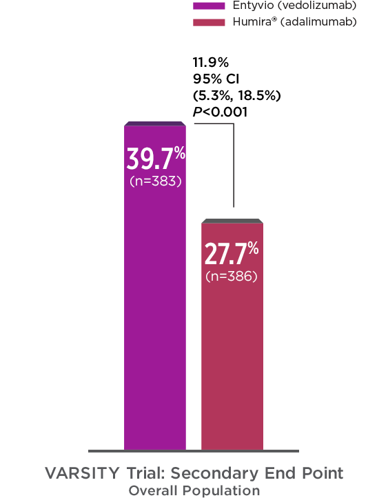
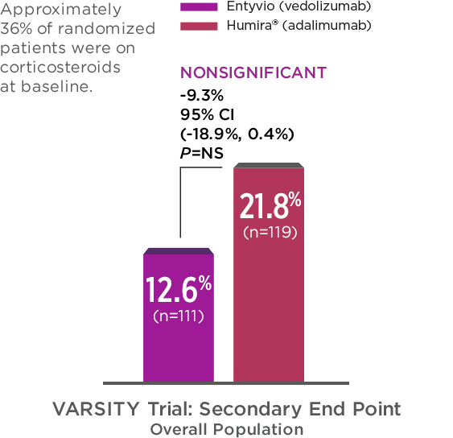
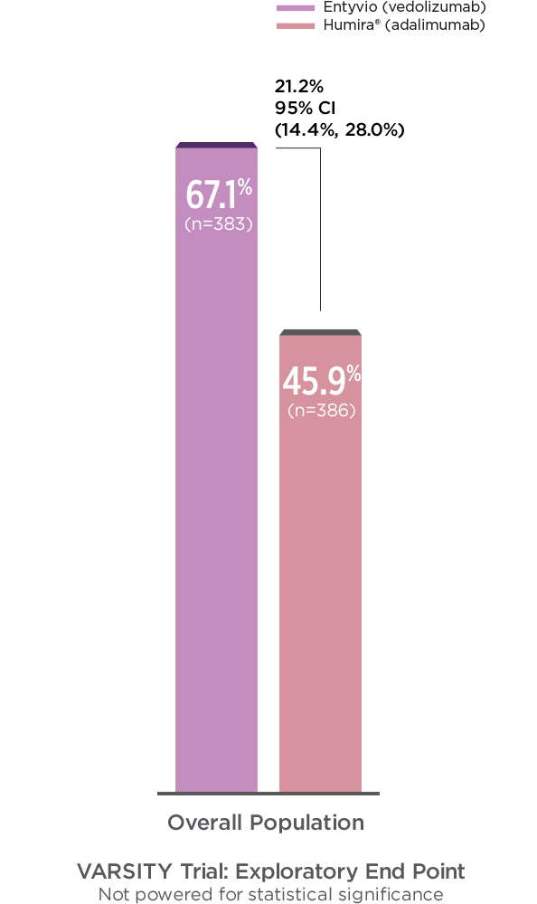
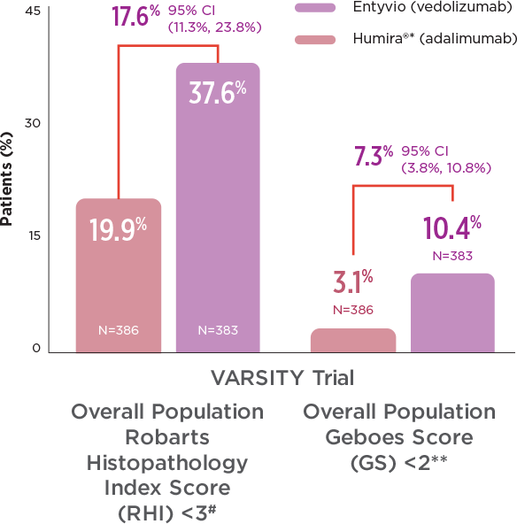
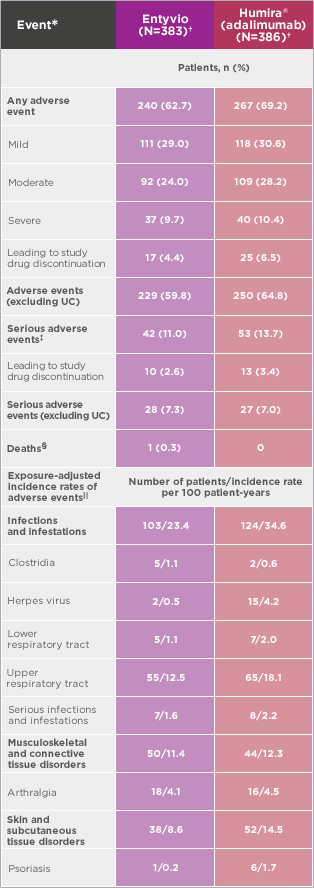

For adult patients with moderately to severely active UC or CD when other therapies have not worked well enough or cannot be tolerated.
GEMINI I TRIAL DATA
The trial studied Entyvio vs. placebo in adult patients with moderately to severely active ulcerative colitis.1,2
OVERVIEW OF VARSITY TRIAL
In the First Head-to-Head Study of Biologics in Moderate to Severe Ulcerative Colitis, Entyvio Demonstrated Superiority to Humira®* (adalimumab) in Clinical Remission Rates at Week 52 in the Overall Population3,4
Primary End Point
CLINICAL REMISSION RATES AT
WEEK 523†‡

Secondary End Point
ENDOSCOPIC IMPROVEMENT AT WEEK 523‡‖

Study Design: VARSITY was a double‑blind, double‑dummy, active‑controlled trial that compared Entyvio with Humira®* (adalimumab) in adults with moderately to severely active ulcerative colitis. Eligible patients were randomized (1:1) to receive Entyvio and placebo, or Humira® and placebo. After induction, patients remained in their respective treatment group throughout the maintenance phase (treat-through design). Previous exposure to TNFα inhibitors other than Humira® was permitted in up to 25% of patients. Patients who had no response or lost response to conventional therapies were eligible. Dosing was consistent with the US product label for both Entyvio and Humira®; no dose escalation was permitted for either treatment group.3 Click below to see full study design and additional study details.
Secondary End Point
CORTICOSTEROID-FREE CLINICAL REMISSION RATES AT WEEK 523¶

For patients on corticosteroids at baseline: Doses must have been stable for ≥2 weeks prior to the first dose and remained unaltered through Week 6. After Week 6, a nonfixed dose tapering was started upon achieving response. During tapering, patients could return to baseline doses only once for loss of response before repeating tapering. Per protocol, patients unable to taper were withdrawn from the study and considered treatment failures for each of the outcomes.
*Humira® (AbbVie Inc. North Chicago, IL). For more information related to Humira, please see AbbVie.com.
†Clinical remission was defined as a complete Mayo score of ≤2 points and no subscore >1 point.
‡Full analysis set includes all randomized patients who received at least 1 dose of study drug.
§Superiority was demonstrated in the overall population.
‖Endoscopic improvement was defined as a Mayo endoscopic subscore of ≤1 point.
¶CS‑free clinical remission rates was assessed in patients who were receiving corticosteroids at baseline (as reported in electronic case report form). CS‑free clinical remission was defined as the population of patients in this subgroup who discontinued corticosteroids by Week 52 and were in clinical remission (defined as complete Mayo score ≤2 points and no subscore >1 point at Week 52).
*Humira® (AbbVie Inc. North Chicago, IL). For more information related to Humira, please see AbbVie.com.
†Clinical response based on partial Mayo score is defined as a reduction in partial Mayo score of ≥2 points and ≥25% from baseline, with an accompanying decrease in rectal bleeding subscore (RBS) of ≥1 point or absolute RBS of ≤1 point. The partial Mayo score is a composite index of 3 disease activity variables (stool frequency, rectal bleeding, and physician's global assessment), each scored on a scale from 0 to 3 (higher scores indicate greater disease activity). Partial Mayo score is calculated analogously to the complete Mayo score but excludes the sigmoidoscopy subscore.
‡Full analysis set includes all randomized patients who received at least 1 dose of study drug.
§Patients with missing clinical response status were considered nonresponders.
CI = confidence interval.
Go back to top of page for VARSITY Primary End Point Data
Entyvio and Humira®* (adalimumab) Response Rates at Week 143,5
Clinical response‖ based on Mayo score at Week 14.
In an exploratory analysis at Week 14, in the overall population, clinical response rates were 67.1% for patients who received Entyvio vs. 45.9% for those who received Humira®.*3,5
CLINICAL RESPONSE BASED ON MAYO SCORE AT WEEK 145‖

Clinical response‖ based on Mayo score at Week 14.
In an exploratory analysis at Week 14, among patients who had not previously received anti‑TNFα therapy, clinical response rates were 70.1% for patients who received Entyvio vs. 49.5% for those who received Humira®.* Among patients who had previously received anti‑TNFα therapy, clinical response rates were 55.7% for those who received Entyvio vs. 32.1% for those who received Humira®.5*
CLINICAL RESPONSE BASED ON MAYO SCORE AT WEEK 145‖
Go back to top of page for VARSITY Primary End Point Data
*Humira® (AbbVie Inc. North Chicago, IL). For more information related to Humira, please see AbbVie.com.
‖Clinical response is defined as a reduction in Mayo score of ≥3 points and ≥30% from baseline with an accompanying decrease in rectal bleeding subscore of ≥1 point or absolute rectal bleeding subscore of ≤1 point. Patients with missing clinical response status were considered nonresponders.
CI = confidence interval; TNFα = tumor necrosis factor alpha.
CLINICAL RESPONSE BASED ON MAYO SCORE AT WEEK 145‖
LONG-TERM DATA
Clinical Remission Rates at Week 52: Entyvio and Humira®* (adalimumab)3
NO PREVIOUS ANTI‑TNFα THERAPY AND PREVIOUS ANTI‑TNFα THERAPY SUBPOPULATIONS
Clinical remission† rates at Week 52 - exploratory end points.
At Week 52, in patients who had not previously received anti‑TNFα therapy, clinical remission rates were 34.2% for patients who received Entyvio vs. 24.3% for those who received Humira®.* In patients who had previously received anti‑TNFα therapy, clinical remission rates were 20.3% for those who received Entyvio vs. 16% for those who received Humira®.3*
*Humira® (AbbVie Inc. North Chicago, IL). For more information related to Humira, please see AbbVie.com.
‡Full analysis set includes all randomized patients who received at least 1 dose of study drug.
§Endoscopic improvement was defined as a Mayo endoscopic subscore of ≤1 point.
‖CS-free clinical remission rates was assessed in patients who were receiving corticosteroids at baseline (as reported in electronic case report form). CS-free clinical remission was defined as the population of patients in this subgroup who discontinued corticosteroids by Week 52 and were in clinical remission (defined as complete Mayo score ≤2 points and no subscore >1 point at Week 52).
Go back to top of page for VARSITY Primary and Secondary End Point Data
For patients on corticosteroids at baseline: Doses must have been stable for ≥2 weeks prior to the first dose and remained unaltered through Week 6. After Week 6, a nonfixed dose tapering was started upon achieving response. During tapering, patients could return to baseline doses only once for loss of response before repeating tapering. Per protocol, patients unable to taper were withdrawn from the study and considered treatment failures for each of the outcomes.
Histologic Remission at Week 52—Supporting Key Efficacy End Point3
EXPLORATORY END POINT: HISTOLOGIC REMISSION AT WEEK 523¶#**
Not powered for statistical significance.
Several definitions of histologic remission in UC have been described. There is no single gold standard for assessing histologic activity in UC, and none of the currently available histologic scoring indices have been fully validated.6-8

Robarts Histopathology Index Score (RHI) <3#
RHI is a 4-item measurement that was developed using items from previously validated measurements of histologic change, and includes signs of inflammation, epithelial changes, and/or erosions/ulcers9
RHI score ranges from 0 (no disease activity) to 33 (severe disease activity)3
Geboes Score (GS) ≤2**
GS is a 7-item measurement that assesses biopsied tissue for signs of histologic changes, which include structural changes, signs of inflammation, epithelial changes, and/or erosions/ulcers9,10
GS is calculated by using a scale that ranges from 0 to 5.4, with higher scores indicating more severe disease activity3
Go back to top of page for VARSITY Primary and Secondary End Point Data
*Humira® (AbbVie Inc. North Chicago, IL). For more information related to Humira, please see AbbVie.com.
¶Patients with missing histologic remission status are considered as nonresponders. Full analysis set includes all randomized patients who received at least 1 dose of study drug.
#Histologic remission per RHI is defined as an RHI score <3.
**Histologic remission per Geboes score is defined as a GS <2.
CI = confidence interval; UC = ulcerative colitis.
Safety was Evaluated in 383 Patients: No New Safety Signals were Observed for Entyvio3-5
STUDY WAS NOT DESIGNED TO ASSESS SAFETY DIFFERENCES

ADVERSE EVENTS IN SAFETY POPULATION
The most frequent AEs* for adalimumab and Entyvio were as follows: ≥1 TEAE, 35.8% and 32.9%; ulcerative colitis, 16.3% and 11.5%; nasopharyngitis, 7.8% and 7.0%; headache, 5.4% and 7.0%; anemia, 6.7% and 5.2%; abdominal pain, 5.2% and 4.7%; upper respiratory tract infection, 4.4% and 5.2%
*Adverse events that occurred during the trial period. Trial period was the time from the first dose of a trial drug and up to 126 days after the last dose.
†Adverse events were classified according to the Medical Dictionary for Regulatory Activities System Organ Class categorization and preferred terms (version 21.0). The safety population was defined as all patients who received at least one dose of the study drug.
‡No cases of progressive multifocal leukoencephalopathy.
§Not related to Entyvio.
‖Updated to include final 68-week safety follow-up.
Eligible patients were adults (aged 18 to 85 years) with moderately to severely active UC, defined as a complete Mayo score of 6 to 12 (range 0 to 12; higher scores represent more active disease), an endoscopic subscore of ≥2, colonic involvement of ≥15 cm, and confirmed diagnosis of UC for ≥3 months. Anti‑TNFα naïve patients who had not responded or lost response to conventional treatments were eligible. Centrally read endoscopies were performed at Weeks 14 and 523
Dosing was consistent with the US product label for both Entyvio and Humira®; no dose escalation was permitted for either treatment group3
After induction, patients remained in their respective treatment group throughout the maintenance phase (treat-through design)3
Enrollment, capped at 25% (~21% was reached), included patients who discontinued treatment with an anti‑TNFα (except adalimumab) due to documented reasons other than safety.3 The majority of the trial population (97.3%) had moderately to severely active disease (Mayo score 6-12). Patients with mild disease represented significant protocol deviations. Per-protocol sensitivity analyses indicated no change from overall population results3-5
Patients naïve to anti‑TNFα therapy were enrolled if they were failing current treatment (eg, CS, 5‑ASA, or immunomodulators).5 Per-protocol sensitivity analyses indicated no change from overall population results.10 Patients on a 5‑ASA or immunomodulator at baseline maintained stable doses throughout the study3
*Includes 2 patients randomized, but never received any study drug.
IV = intravenous; Q2W = every 2 weeks; Q8W = every 8 weeks; SC = subcutaneous; TNFα = tumor necrosis factor alpha; CS = corticosteroids; 5‑ASA = 5‑aminosalicylate.
GEMINI I DATA
Primary and Secondary End Points from GEMINI I: UC Trials I and II
Study Design: Two randomized, double‑blind, placebo‑controlled studies enrolled adult patients with moderately to severely active UC who had failed at least 1 conventional therapy, including corticosteroids or immunomodulators and/or ≥1 anti‑TNFα therapy.1,2 In UC Trial I, patients were randomized (3:2) to receive Entyvio 300 mg or placebo by intravenous infusion at Weeks 0 and 2. In UC Trial II, patients receiving Entyvio who demonstrated clinical response at Week 6 (from UC Trial I or an open-label cohort) were randomized (1:1:1) to receive either Entyvio 300 mg every 8 weeks, Entyvio 300 mg every 4 weeks, or placebo every 4 weeks.1 The Entyvio Q4W dosing regimen did not demonstrate additional clinical benefit over the Q8W dosing regimen. The Q4W dosing regimen is not the recommended dosing regimen.
*Clinical response = reduction in complete Mayo score of ≥3 points and ≥30% from baseline with an accompanying decrease in rectal bleeding subscore of ≥1 point or absolute rectal bleeding subscore of ≤1 point.
†Improvement of endoscopic appearance of the mucosa = Mayo endoscopy subscore of 0 (normal or inactive disease) or 1 (erythema, decreased vascular pattern, mild friability).
‡Clinical remission = complete Mayo score of ≤2 points and no individual subscore >1 point.
§Corticosteroid-free clinical remission: Assessed in the subgroup of patients who were receiving corticosteroids at baseline and who were in clinical response at Week 6 (n=72 for placebo, and n=70 for Entyvio Q8W). CS‑free clinical remission was defined as the proportion of patients in this subgroup who discontinued corticosteroids by Week 52 and were in clinical remission at Week 52.
Safety was evaluated in clinical trials of over 3300 adults1
Trials included more than 800 patients who received Entyvio for more than 2 years.
UC Trials I & II and CD Trials I & III Select Adverse Events
Infection rates with Entyvio were 0.85 per patient-year vs 0.7 for placebo
Infections consisted primarily of nasopharyngitis, upper respiratory tract infection, sinusitis, and urinary tract infection
2% of patients discontinued Entyvio due to infections
Serious infection rates with Entyvio were 0.07 per patient-year vs 0.06 for placebo
Serious infections included anal abscess, sepsis (some fatal), tuberculosis, salmonella sepsis, Listeria meningitis, giardiasis, and cytomegaloviral colitis
Although unlikely, a risk of PML cannot be ruled out:
PML, a rare and often fatal opportunistic infection of the central nervous system (CNS), has been reported with systemic immunosuppressants, including another integrin receptor antagonist. PML is caused by the John Cunningham (JC) virus and typically only occurs in patients who are immunocompromised
1 case of PML in an Entyvio-treated patient with multiple contributory factors has been reported in the postmarketing setting (e.g., human immunodeficiency virus [HIV] infection with a CD4 count of 300 cells/mm3 and prior and concomitant immunosuppression)
Adverse reactions were reported in 52% of patients treated with Entyvio (N=1434) and 45% of patients treated with placebo (N=297)
Over 52 weeks, 7% of patients treated with Entyvio experienced serious adverse reactions compared to 4% treated with placebo
Feagan BG, Rutgeerts P, Sands BE, et al; for the GEMINI 1 Study Group. N Engl J Med. 2013;369(8):699-710.
Sands BE, Peyrin-Biroulet L, Loftus EV Jr, et al. N Engl J Med. 2019;381(13):1215-1226.
Data on file. Takeda Pharmaceuticals.
Sands BE, Peyrin-Biroulet L, Loftus EV Jr, et al. N Engl J Med. 2019;381(13):1215-1226. (supplemental appendix).
Mosli MH, Parker CE, Nelson SA, et al. Cochrane database Syst Rev. 2017;5:CD011256.
Pai RK, Jairath V, Vande Casteele N, et al. Gastrointest Endosc. 2018;88(6):887-898.
Peyrin-Biroulet L, Sandborn W, Sands BE, et al. Am J Gastroenterol. 2015;110(9):1324-1338.
Mosli MH, Feagan BG, Zou G, et al. Gut. 2015;66(1):50-58.
Geboes K, Riddell R, Ost A, et al. Gut. 2000;47(3):404-409.
You are about to leave this website.
By clicking "Continue," you will leave this site and enter TakedaMedConnect.com. The information contained on Takeda MedConnect is intended for U.S. healthcare professionals only in response to a specific request for medical information.
You are about to leave this website.
You are about to leave this website and enter a website operated by an independent third party.
The links to third-party websites contained on this website are provided solely for your convenience. Takeda does not control the content contained on any third-party website linked from this website. Your activities at those websites will be governed by the policies and practices of those third parties.
Please select "Continue" if you wish to be taken to this third-party website.